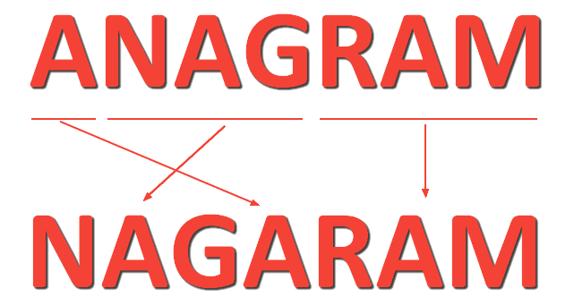
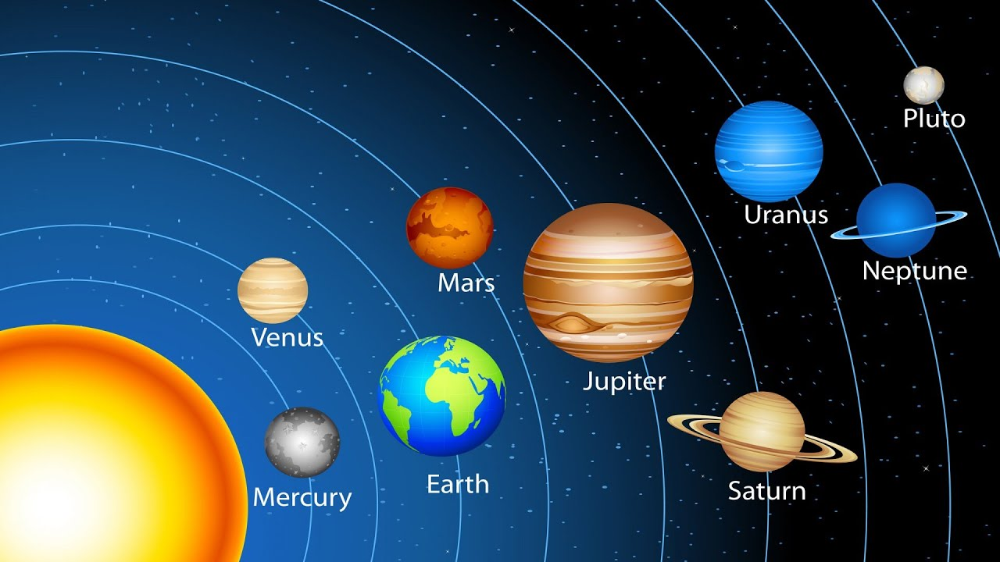
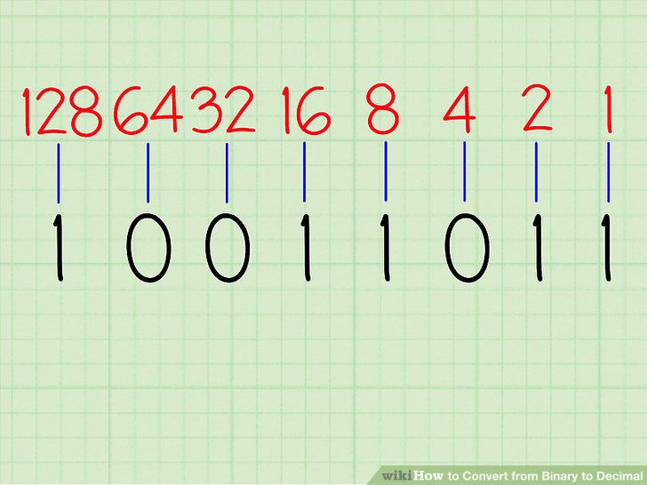

Hi. I'm Julia.
Full-Stack Web Developer
-
Calculater: A CLI program that simulates a calculator and computes user input

-
Ride Share program using nested hashes and arrays
-
Anagram game program
 -
Solar System: A CLI program that interacts with one Solar System and many Planets using Object Oriented principles
 -
Binary to Decimal Converter
 -
Grocery Store: Library code that tracks orders using Object Oriented principles, reading from a data store, and TDD